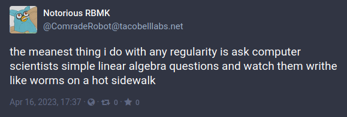
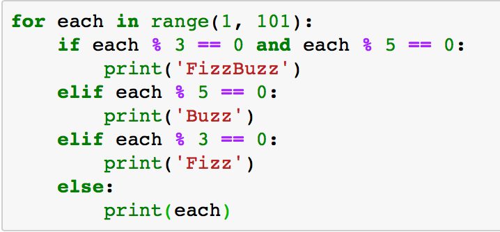
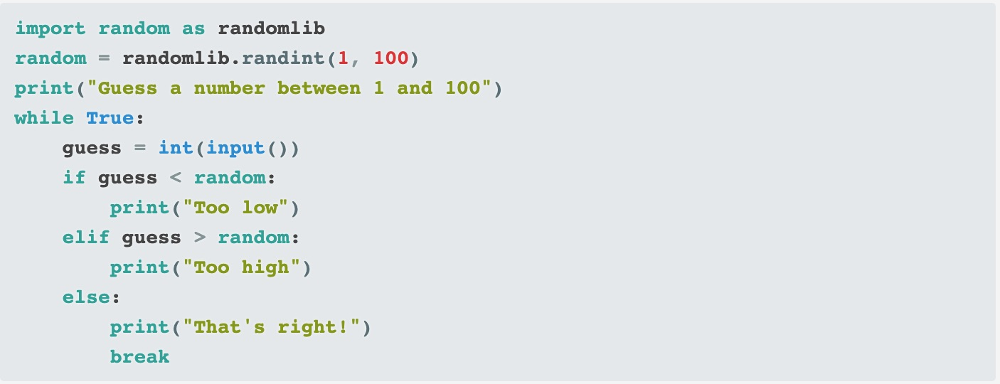
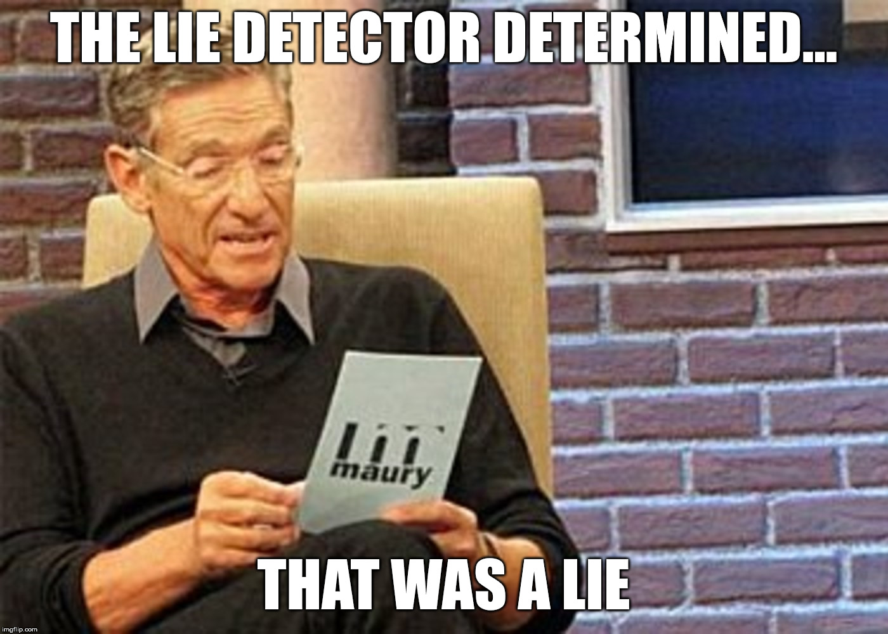
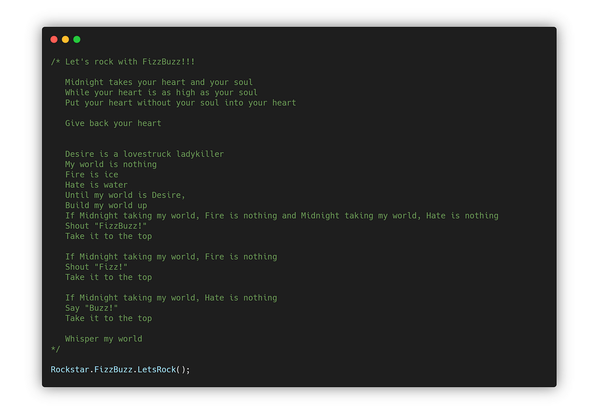
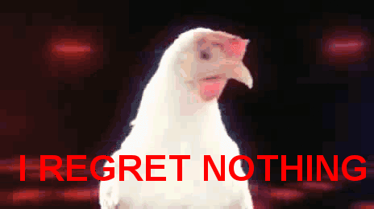

The Culture of Computer Science

WTF is CS Anyways???
What do you think Computer Science is about?
- Fixing Computers?
- Coding Apps?
- Hacking?
- Losing All Your Money on Dogecoin???
- Could ask GPT and learn about CS from a CS project...
Computer Science isn't (really) About Computers
CS is about computers the way biology is about microscopes, astronomy is about telescopes, or writing is about pens.
It's not Information Technology, although it helps to know how to fix a computer.
It's not "coding", that's what your patients would be if you were a doctor.
We use math, but CS is not a branch of math

Computer Science is about Problem Solving
Computers are just a tool to make problem solving easier
Computers: Dumb but Very Fast
-
Can do lots of math really quick and remember lots of variables
Algorithms: Recipes for Problem Solving
How would you search through security footage to find the time a break-in happened in the middle of the night?
- A - Start watching from the beginning until you see it happen
- B - Skip through the video randomly until you see the break-in
- C - Any Other Bright Ideas?
Divide and Conquer Algorithm
Reduce the Problem Space: You have 12 hours of security footage to search through?
- Start Halfway (6 hours): Do you see broken glass? Jump to half the first half (3 hours in)
- No broken glass? Skip to halfway through the rest of the video (9 hours in)
Keep reducing the possible timeline the break-in occurred by half until you determine the exact time
There are different algorithms for different problems.
Understanding the trade-offs different algorithms make in terms of things like:
- the time they take
- the resources they require
- how they scale as the problem gets bigger
is an important part of Computer Science.
Understanding how to store information (Data Structures) is another.
Programming Languages
Computers only really understand 1's and 0's - too much effort for people to understand
Programming languages are tools to make telling computers what to do easier, learning programming is a means to an end.
Computer Science majors learn programming, but it's just another tool for problem-solving
Programming can be a useful skill for anyone
My sister is a lawyer, learned basic commands to get information from company database and search through it
Saved a ton of time, didn't have to wait for IT to get around to it
Automate tasks
Start with Python if you're interested


CS class at Syracuse
I can't give you a ton of info on CS at SU specifically, because this is my first semester BUT
Major requirements, info from website
size of classes, # of students
18 credits upper-level electives - wide range of topics to specialize into
lots of theory, but practical experience at SU too
research at SU, tier 1 research university
SU events CS majors participate in: hackathons, invent upstate, clubs for everything from drones to blockchain
Cryptography is a topic CS majors can study
SU Cybersecurity club and classes
Part of Cybersecurity
haveibeenpwnded demo
A Simple Cryptography Algorithm
Arire tbaan tvir lbh hc Arire tbaan yrg lbh qbja Arire tbaan eha nebhaq naq qrfreg lbh Arire tbaan znxr lbh pel Arire tbaan fnl tbbqolr Arire tbaan gryy n yvr naq uheg lbh
Copy-paste into rot13.org
First person to decrypt the message gets a prize!
What's the prize???
There is no prize, I lied.

After Graduation
research, software development,
"software eating the world"
tech that makes programming easier tends to increase demand for programmers
Culture
details matter, 1 character in the wrong place can break your software
determination: make the damn thing work
cooperation: free/open source software, team projects, most working software developers are part of a team
info from Marum
info from interviews
- email other students for quotes?
futurism, love of novelty and new stuff
Students always talking about the latest tech trends
Weird sense of humor in CS culture
thought it was worth commenting on
Prof Marum's jokes
GNU & other acronyms, weird programming languages
Brainf**k: This is a real programming language, created by a real programmer
A programmer got tired of jobs asking for "rockstar programmers" so they made a language called Rockstar where all the code reads like nonsensical song lyrics

Programming is a creative expression of computer science. More of an art than it looks like
Issues
Women in Computer Science
Would I Change My Major?
No.

Content is HTML
<div class="slide">Your content here...</div>
Like I said, it's just a web page.
(Now try scrolling up and down like you would on any normal web page.)